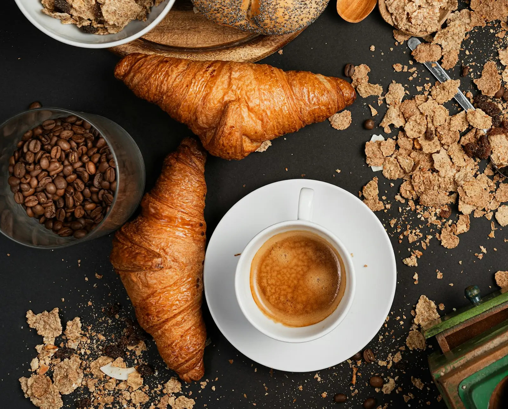
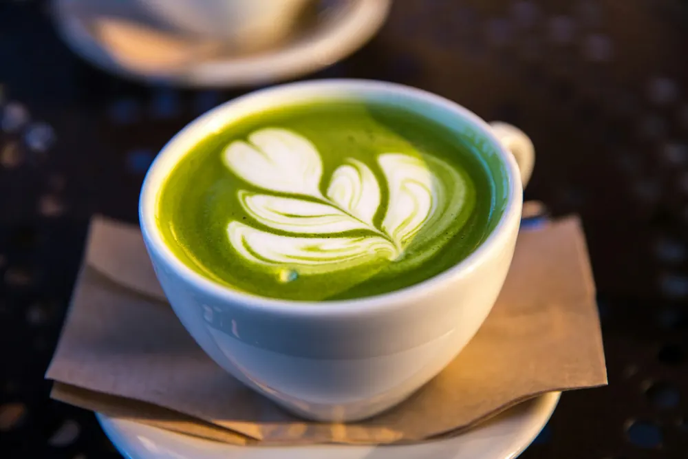

営業 7:30〜17:00定休日 水曜・第3木曜

¥520
ナッツのような香ばしさと、やわらかな甘み。
¥620
その日のおすすめの豆を、一杯ずつハンドドリップで。
¥580
深煎りのエスプレッソに、まろやかなミルク。
¥550
ひと晩かけて落とした、すっきりした味。

国産の茶葉のやさしい紅茶。ミルクを足してもおいしい。
地元・西尾の抹茶を、たっぷりのミルクで。甘さはひかえめです。
¥600
香ばしいほうじ茶に、温めたミルクをたっぷり。
¥320
外はさくっと、中はしっとり。朝のうちに売り切れることもあります。
¥450
自家製の酵母で、ひと晩かけて発酵させた毎日のパン。
¥380
コーヒーによく合う、噛むほどおいしいパン。
¥340
西尾の抹茶を練りこんだ生地で、自家製のあんこを包みました。
¥360
自家製のあんこに、発酵バターをたっぷり。
¥780
近くの畑の野菜を、たっぷりはさんで。
¥680
ふわふわの厚焼きたまごを、自家製の食パンで。
¥980
日替わりのスープと、パン2つのセット。
¥850
いちごとメープルシロップを、たっぷりのせて。
¥240〜
スコーン、マフィン、クッキーなど。日によって変わります。
価格はすべて税込です。パンと焼き菓子はお持ち帰りもできます。
営業時間と場所を見る